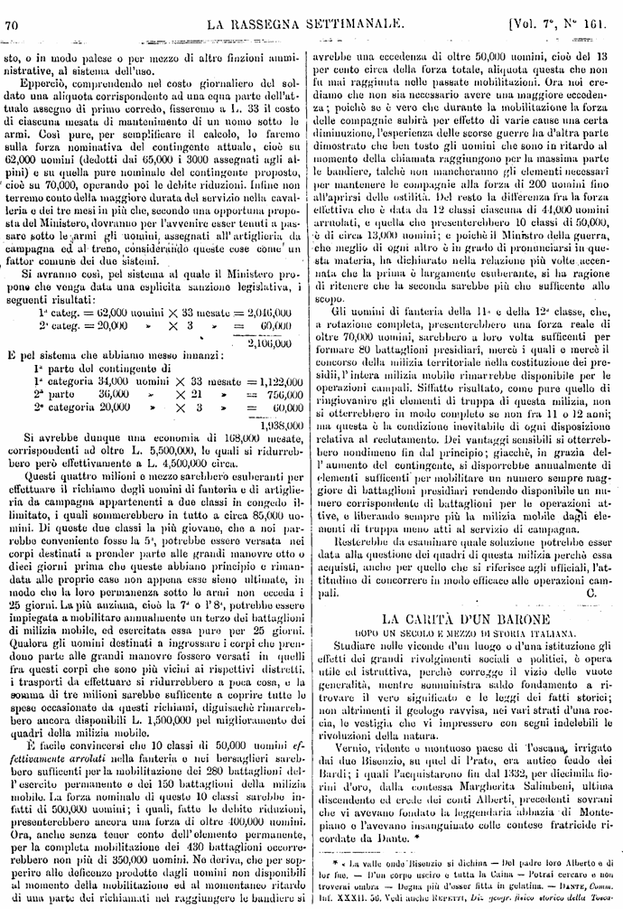
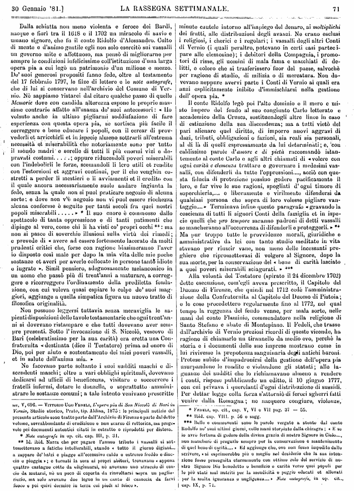
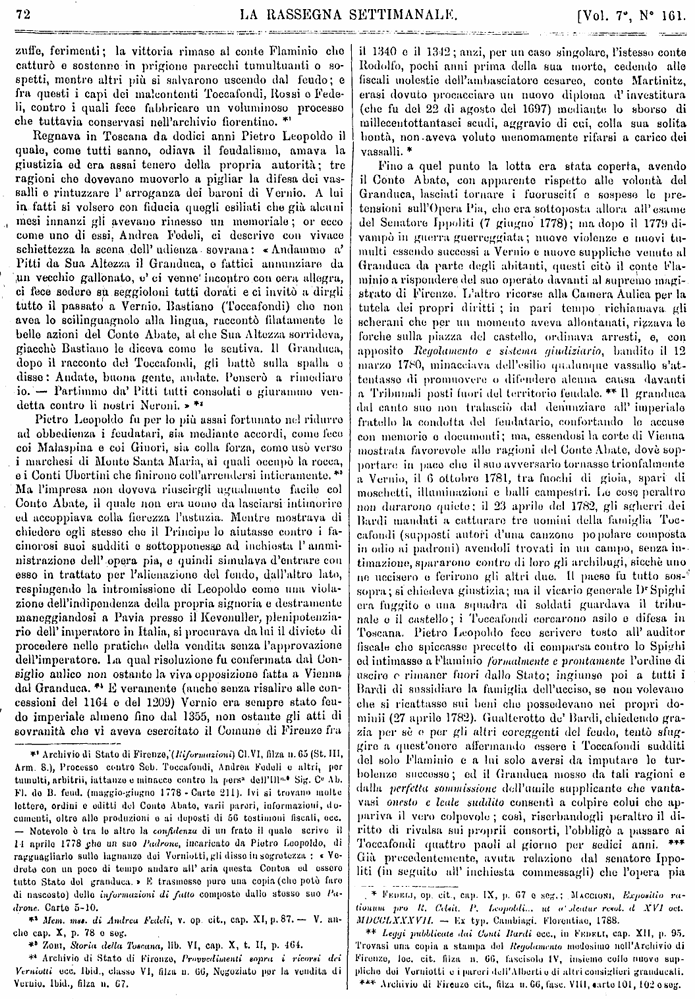
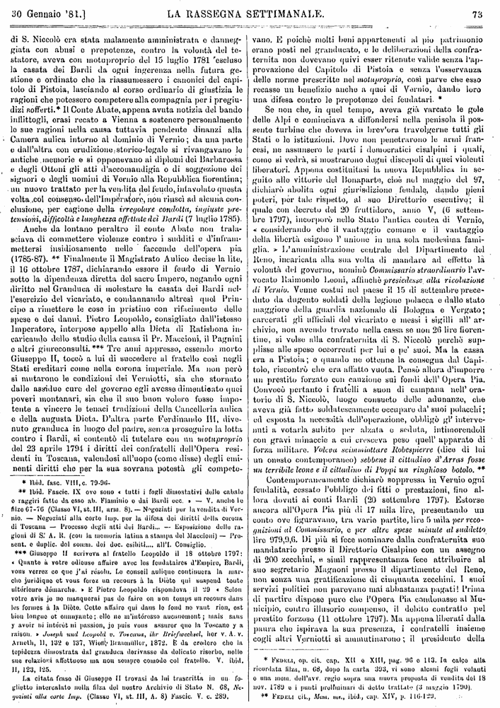
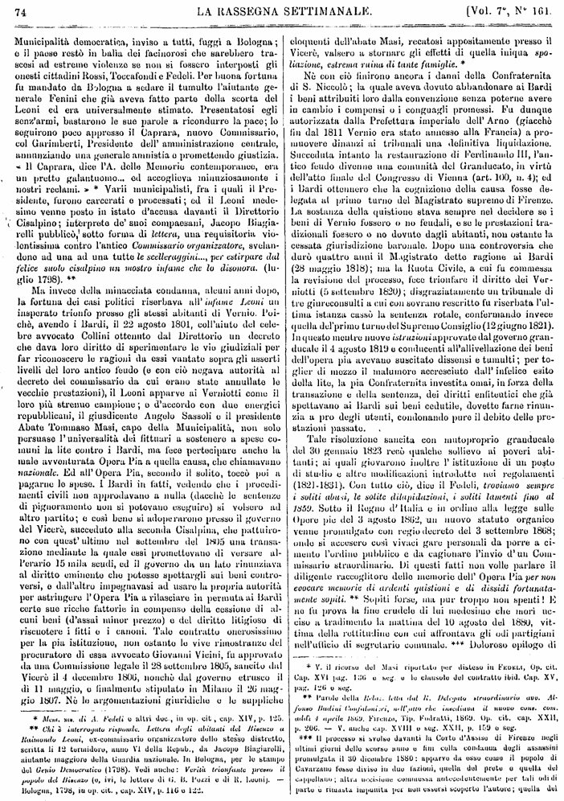
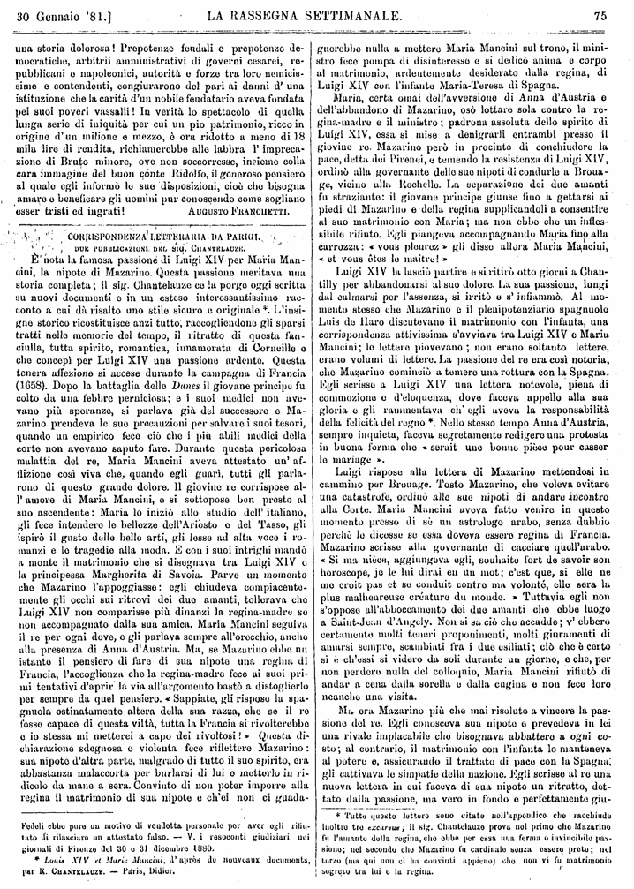
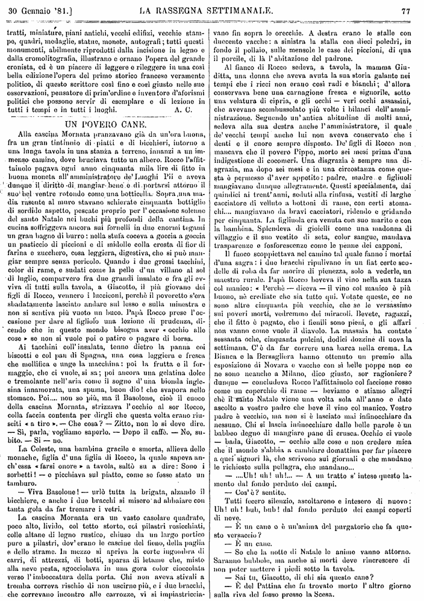
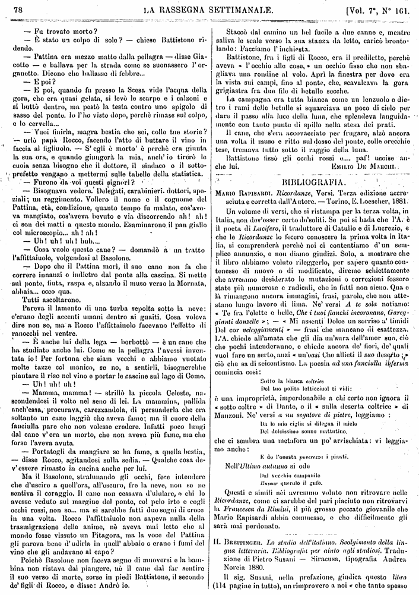
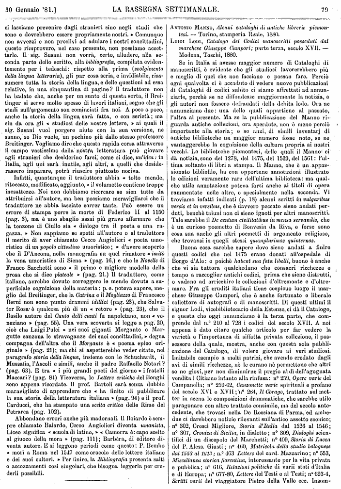
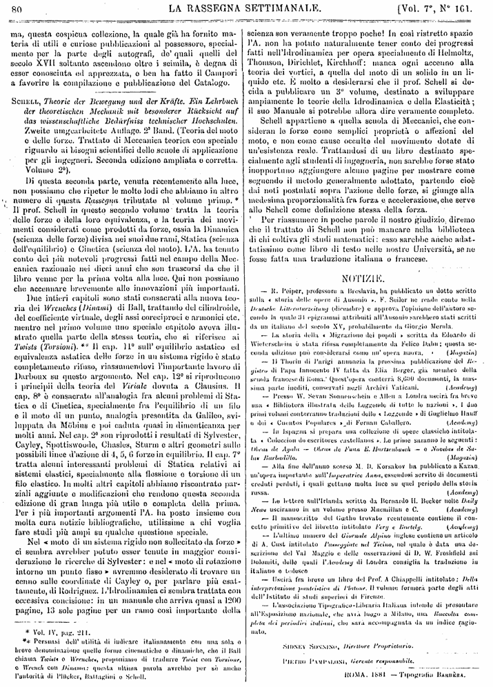

Pagina 1

LA CARITÀ D'UN BARONE dopo un secolo e mezzo di storia italiana
Studiare nelle vicende di un luogo o d'una istituzione gli
effetti dei
utile ed istruttiva, perché corregge il vizio delle vuote
generalità e somministra saldo fondamento a ri-
trovare il vero significato e le leggi dei fatti storici;
non altrimenti il geologo ravvisa, nei vari strati d'una roc-
cia, le vestigia che vi impressero con segui indelebili le
rivoluzioni della natura.
Vernio, ridente e montuoso paese di Toscana, irrigato
dai due Bisenzio, su quel di Prato, era antico feudo dei
Bardi; i quali lo acquistarono fin dal 1332, per diecimila fio-
rini d'oro, dalla contessa Margherita Salimbeni, ultima
discendente ed erede dei conti Alberti, precedenti sovrani
che vi avevano fondato la leggendaria abbazzia di Monte-
piano e l'avevano insanguinato colle contese fratricide ri-
cordate da Dante. *
La valle onde il Bisenzio si declina — Del padre loro Alberto e di
lor fue. — D'un corpo uscir e tutta la Caina — Potrai cercare e non
troverai ombra — Degna più d'esser fitta in gelatina. — Dante, Comm.
Inf.
Pagina 2

LA CARITÀ D'UN BARONE dopo un secolo e mezzo di storia italiana
Dalla schiatta non meno violenta e feroce dei Bardi,
nacque e fiorì tra il 1618 e il 1702 un
umano signore
di mente e d'animo gentile, egli non solo esercitò sui vassalli
un governo mite e affettuoso, ma pensò di migliorarne per
sempre le condizioni infelicissime con l'istituzione di una larga
De'
del 17 febbraio 1797, le filze di lettere e le note autografe,
che di lui si conservano nell'archivio del Comune di Ver-
nio. Nè sappiamo ristarci dal citare qualche passo di quelle
Memorie dove con candida alterezza espone le proprie mas-
sime contrarie affatto all'usanza
volsuto anche in ultimo pigliarmi soddisfazione di fare
esperienza con questa opera pia, se sortisca più facile il
correggere e bene educare i popoli, con il cercar di prov-
vederli et arricchirli et in ispecie almeno sottrarli all'estrema
necessità et
il mondo madri e sorelle di tutti li più enormi vizi e de-
pravati costumi.....; oppure riducendoli
con l'indebolirli le forze, scemandoli li loro utili et rendite
con l'estorsioni et aggravi continui, per il che
stretti a perder li mestieri e li avviamenti et il credito con
il quale ancora necessariamente suole andare ingiunta la
fede, senza la quale non si
sorte: e dove non
alcuna conforme è seguito per tanti secoli fra quei nostri
popoli miserabili..... * Il suo cuore è commosso dallo
spettacolo di tanta
dipinge al vero, come chi li ha visti
non si pasce di soverchie illusioni sulla virtù dei rimedi;
e prevede di avere ad essere fortemente lacerato da molti
prudenti critici che, forse con ragione biasimeranno l'aver
io disposto così male per dopo la mia vita delle mie poche
sostanze et averi per averle collocate in persone tanto idiote
e ingrate. Simil pensiero, sdegnosamente melanconico in
un uomo che passò più di trent'anni a maturare, a correg-
gere e ricorreggere l'ordinamento della prediletta fonda-
zione, con cui voleva quasi espiare le colpe
giori, aggiunge a quella simpatica figura di un nuovo tratto di
filosofica originalità.
Non possono leggersi tuttavia senza meraviglia le sa-
pienti disposizioni delle tavole testamentarie che ogni trent'an-
ni si dovevano ristampare e che tutti dovevano aver sem-
pre presenti. Sotto l'invocazione di S.
Bari (celebratissimo per la sua
fraternita destinata (dice il Testatore) prima ad onore di
Dio, poi per aiuto e sostentamento dei miei poveri vassalli,
et in salute dell'anima mia.
Ne facevano parte soltanto i suoi sudditi maschi e di-
scendenti maschi; oltre a vari obblighi spirituali, dovevano
dedicarsi ad ufficii di
fratelli infermi, dotare de donzelle, e soprattutto ammini-
strare le sostanze comuni; a tale intento venivano prescritte
minute cautele intorno all'impiego del denaro, ai moltiplichi
dei frutti, alle distribuzioni degli avanzi. Ne erano esclusi
i religiosi, i cherici e i regolari; i vassalli degli altri Conti
di Vernio (i quali peraltro, potevano in certi casi parteci-
pare alle elemosine); i debitori della Compagnia, i promo-
tori di risse, gli uomini di mala fama e macchiati di de-
litti, e coloro che si trasferisserio fuor del paese, salvochè
per ragione di studio, di milizia o di mercatura. Non do-
vevano neppure avervi parte i Conti di Vernio ai quali era
anzi esplicitamente inibito d'immischiarsi nella gestione
dell'opera pia. *
Il conte Ridolfo legò poi l'alto dominio e il mero e mi-
sto impero del feudo al suo congiunto Carlo letterato e
accademico della Crusca, sostituendogli altre linee in caso
di estinzione della sua discendenza; ma a tutti vietò del
parti alienare quel diritto, di imporre nuobi aggravi di
dazi, tributi, obbligazioni o fazioni, sia reali sia personali,
al di là di quelli espressamente da lui determinati; e, con
caldissime parole d'amore e di pietà raccomandò istan-
temente al conte Carlo e agli altri chiamati di volere con
ogni carità e clemenza trattare e governare i medesimi vas-
salli, con difenderli da tutte l'oppressioni...., acciò con que-
sta fiducia di protezione possino godere pacificamente il
loro, e far vive le sue ragioni, spogliati d'ogni timore di
soperchieria,.... e liberamente e virilmente difendersi da
qualsiasi persona che sopra di loro volesse pigliare van-
taggio.... Terminava infine questo paragrafo gravando la
coscienza di tutti li signori Conti della famiglia et in ispe-
cie quelli che pro tempore saranno padroni di detti vassalli
se mancheranno all'occorrenza di difenderli e proteggerli. **
Ma pur troppo tutte le provvidenze morali, giuridiche e
amministrative da lui con tanto studio meditate in vita
stavano per riuscir vane, non meno delle incessanti pre-
ghiere che ripromettevasi di volgere al Signore, dopo la
sua morte, per la conservazione del bene di carità lasciato
a quei poveri miserabili sciagurati. ***
Alla volontà del Testatore (spirato il 24 dicembre 1702)
dette esecuzione, com'egli aveva prescritto, il Capitolo del
Duomo di Firenze, che quindi nel 1712, nel qual
tempo la reggenza del feudo venne, per mala sorte, nelle
mani del conte Flaminio, commendatore nella religione di
Santo Stefano e abate di Montepiano. Il Fedeli, che trasse
dall'archivio di Vernio preziosi ricordi di queste vicende, ha
ragione di chiamarlo un
storia e i documenti delle sue imprese mostrano come in
lui rivivesse la
Pretese subito d'impadronirsi della gestione dell'opera pia
usurpandone le rendite e violandone gli statuti; alle la-
gnanze dei sudditi che lo richiamavano almeno a rendere
i conti, rispose pubblicando un deitto, il 10 giugno 1777,
con cui privava i querelanti d'ogni distribuzione di sussidi.
Per dettar legge
venire dalla Romagna; ne nacquero congiure, violenze,
na, V, 696 — Vittorio Ugo Fedeli L'opera pia di San Niccolò di Bari
in Vernio, Studio storico, Prato, tip.
presente articolo sono tratte parte dall'Archivio di Firenze e in parte dal detto
volume, sovrabbondante di erudizione e non scarso di rettorica, ma prege-
vole pei documenti autentici citati in estratto o riprodotti per disteso.
Note autografe in op. cit.
Id.
toponevano a fatiche intollerabili, stando tutto il giorno digiuni...
a zappare
cio e pioggia; e tornati la sera ai propri abituri, trovavano appena
quattro castagne cotte da sdigiunarsi, nè avevano uno straccio di cen-
cio da mutarsi, nè un poco di coperta da rinvoltarsi sopra un paglie-
riccio, ma solo avevano due legne in un cante di casuccia da farvi
fuoco e poi
Fedeli, op. cit.
Ibid..
Belle e commoventi sono le parole vergate a stento dal conte
Rodolfo ne'
io avrò fortuna di godere della divina grazia di nostro Signore in cielo...,
non mancherò di pregarlo sempre per la conservazione e mantenimento
di quel bene di carità..... Ed aggiunge che, ove non fosse impedito dallo
scrivere, si esprimerebbero più e meglio nel desiderio che la sua inten-
zione fosse proseguita eternamente con ottimo zelo di servizio di no-
stro Signore Dio benedetto e benefizio e carità verso quei popoli per
lo più stati mal nutriti per la mendicità e peggio educati ed allevati
per la molta ignoranza e negligenza..... Note autografe, in op. cit.
cap.
Pagina 3

LA CARITÀ D'UN BARONE dopo un secolo e mezzo di storia italiana
zuffe, ferimenti; la vittoria rimase al conte Flaminio che
catturò e sostenne in prigione parecchi tumultuanti o so-
spetti, mentre altri più si salvavano uscendo dal feudo; e
fra questi i capi dei malcontenti Toccafondi, Rossi o Fede-
li, contro i quali fece fabbricare un voluminoso processo
che tutta via conservasi nell'archivio fiorentino. *1
Regnava in Toscana da dodici anni Pietro Leopoldo il
quale, come tutti sanno, odiava il
giustizia ed era assai tenero della proprià autorità; tre
ragioni che dovevano muoverlo a pigliar la difesa dei vas-
salli e rintuzzare l'arroganza dei baroni di Vernio. A lui
in fatti si volsero con fiducia quegli esiliati che già alcuni
mesi innanzi gli avevano rimesso un memoriale; or ecco
come uno di essi, Andrea Fedeli, ci descrive con vivace
schiettezza la scena dell'udienza sovrana: Andammo a'
Pitti da sua Altezza il Granduca, e fattici annunziare da
un vecchio gallonato, e' ci venne incontro con cera allegra,
ci fece sedere su seggiolini tutti dorati e ci invitò a dirgli
tutto il passato a Vernio. Bastiano (Toccafondi) che non
avea lo scilinguagnolo alla lingua, raccontò finalmente le
belle azion del Conte Abate, al che Sua Altezza sorrideva,
giacchè Bastiano le diceva come le sentiva. Il Granduca,
dopo il racconto del Toccafondi, gli battè sulla spalla e
disse: Andate, buona gente, andate. Penserò a rimediare
io. - Partimmo da' Pitti tutti consolati e giurammo ven-
detta contro li nostri Neroni. *2
Pietro Leopoldo fu per lo più assai fortunato nel ridurre
ad obbedienza i feudatari, sia mediante accordi, come fece
coi Malaspina e coi Ginori, sia
i marchesi di Monte Santa Maria, ai quali occurò la rocca,
e i Conti Ubertini che finirono coll'arrendersi intieramente. *3
Ma l'impresa non doveva riuscirgli ugualmente facile col
Conte Abate, il quale non era uomo da lasciarsi intimorire
ed accoppiava
chiedere egli stesso che il Principe lo aiutasse contro i fa-
cinorosi suoi sudditi e sottoponesse ad inchiesta l'ammi-
nistrazione dell'opera pia, e quindi simulava d'entrare con
esso in trattato pr l'alienazione del feudo, dall'altro lato,
respingendo la intromissione di Leopoldo come una viola-
zione dell'indipendenza dalla propria signoria e destramente
maneggiandosi a Pavia presso il Kevenuller, penipotenzia-
rio dell'imperatore in Italia, si procurava da lui il divieto di
procedere nelle pratiche della vendita senza l'approvazione
dell'imperatore. La qual risoluzione fu confermata dal Con-
siglio aulico non ostante la viva opposizione fatta a Vienna
dal Granduca. *4 E vermanete (anche senza risalire alle con-
cessioni del 1164 e del 1209) Vernio era sempre stato feu-
do imperiale almeno fino al 1355, non ostante gli atti di
sovranità che vi aveva esercitato il Comune di Firenze fra
il 1340 e il 1342; anzi, per un caso singolare, l'
Rodolfo, pochi anni prima della sua morte, cededo alle
fiscali molestie dell'ambasciatore cesareo, conte Martinitz,
erasi dovuto procacciare un nuovo diploma d'investitura
(che fu del 22 di agosto del 1697) mediante lo sborso di
millecentottantasei scudi, aggravio di cui,
bontà, non aveva voluto menomamente rifarsi a carico dei
vassalli.*
Fino a quel punto la lotta era stata coperta, avendo
il Conto Abate, con apparento rispetto alle volontà del
Granduca, lasciati tornare i fuorusciti e sospese le pre-
tensioni sull'Opera Pia, che era sottoposta allora all'esame
del Senatore Ippoliti(7 giugno 1778); ma dopo il 1779 di-
vampò in guerra guerreggiata; nuovo violenze e nuovi tu-
multi essendo successi a Vernio e nuove suppliche venute al
Granduca da parte degli abitanti, questi citò il conte Fla-
minio a rispondere del suo operato davanti al supremo magi-
strato di Firenze. L'altro ricorse alla Camera Aulica per la
tutela dei propri diritti ; in pari tempo richiamava gli
scherani che per un momento aveva allontanati, rizzava le
forche sulla piazza del castello, ordinava arresti, e, con
apposito Regolamento e sistema giudiziario, bandito il 12 marzo 1780, 12
marzo 1780, minacciava dell'esilio qualunque vassallo s'at-
tentasse di promuovere o difendere alcuna causa davanti
a Tribunali posti fuori del territorio feudale. ** Il granduca
dal cauto suo non tralasciò dal denunziare all' imperiale
fratello la condotta del feudatario, confortando le accuse
con memorie e documenti; ma, essendosi la corte di Vienna
mostrala favorevole alle ragioni del Conte Abate, dovè sop-
portare in pace che il suo avversario tornasse trionfalmente
a Vernio, il 6 ottobre 1781, tra fuochi di gioia, spari di
moschetti, illuminazioni e balli campestri. Le cose peraltro
non durarono quiete; il 23 aprile del 1782, gli sgherri dei
Bardi mandati a catturare tre uomini della famiglia Toc-
cafondi (supposti autori d'una canzono popolare composta
in odio ai padroni) avendoli trovati in un campo, senza in-
timazione, spararono contro di loro gli archibugi, sicché uno
ne uccisero e ferirono gli altri due. Il paese fu tutto sos-
sopra; si chiedeva giustizia; ma il vicario generale DeSpighi
era fuggito e una squadra di soldati guardava il tribu-
nale e il castello; i Toccafondi cercarono asilo e difesa in
Toscana. Pietro Leopoldo fece scrivere tosto all' auditor
fiscale che spiccasse precetto di comparsa contro lo Spighi
ed intimasse a Flaminio formalmente e prontamente l'ordine di
uscire e rimaner fuori dallo Stato; ingiunse poi a tutti ì
Bardi di sussidiare la famiglia dell'ucciso, se non volevano
che si ricattasse sui beni che possedevano nei propri do-
minii (27 aprile 1782). Gualterotto
zia per sé e per gli altri coreggenti del feudo, tentò sfug-
gire a quest'onoro affermando essere i Toccafondi sudditi
del solo Flaminio e a lui solo aversi da imputare le tur-
bolenze successe; ed il Granduca mosso da tali ragioni e
dalla perfetta sommissione dell'umile supplicante che vanta-
vasi onesto e leale suddito consentì a colpire colui che ap-
pariva il vero colpevole; così, riserbandogli peraltro il di-
ritto di rivalsa sui proprii consorti, l'obbligò a passare ai
Toccafondi quattro paoli al giorno per sedici anni. ***
Già precedentemente, avuta relazione dal senatore Ippo-
liti (in seguito all' inchiesta commessagli) che l'opera pia
*1 Archivio di Stato di Firenze, (Riformazioni), Cl.
Arm.
per tumulti, arbitrii, iattanze e minacce contro la pers.a
Fl. de B. feud.
lettere, ordini e editti del Conte Abate, varii pareri, informazioni, do-
cumenti, oltre alle produzioni e ai depositi di 56 testimoni fiscali, ecc.
- Notevole è tra le altre la confidenza di un frate il quale scrive il
14 aprile 1778 che un suo Padrone, incaricato da Pietro Leopoldo, di
ragguagliarlo sulle lagnanze dei Verniotti, gli disse in segretezza : Ve-
drete con un poco di tempo andare all'aria questa Contea ed essere
tutto Sato del granduca. E trasmesse pure una copia (che potè fare
di nascosto) dalle informazioni di fatto composte dallo stesso suo Pa-
drone. Carte 5-10.
*2 Mem. msc.
che cap.
*3 ZOBI, Storia della Toscana, lib. VI, cap.
*4 Archivio di Stato di Firenze, Provvedimenti sopra i ricorsi dei
Verniotti ecc. Classe VI, filza n.
Vernio. Ibid.., filza n.
* Fedeli, op. cit., cap.
tionum pro Ill. Celsit. p.
MDCCLXXXVII. Ex typ. Cambiagi, Florentiae, 1788.
** Leggi pubblicate dai Conti Bardi ecc., in FEDELI, cap.
Trovasi una copia a stampa del Regolamento medesimo nell'Archivio di
Firenze, loc. cit. filza n.
pliche dei Verniotti e i pareri dell'Alberti e di altri consiglieri granducali.
*** Archivio di Firenze, filza n.
Pagina 4

LA CARITÀ D'UN BARONE dopo un secolo e mezzo di storia italiana
di S.
giata con abusi e prepotenze, contro la volontà del te-
statore, aveva con motuproprio del 15 luglio 1781 escluse
la casata dei Cardi da ogni ingerenza nella futura ge-
stione e ordinato che la riassumessero i canonici del capi-
tolo di Pistoia, lasciando al corso ordinario di giustizia le
ragioni che potessero competere alla compagnia per i pregiu-
dizi sofferti.* Il Conte Abate, appena avuta notizia del bando
inflittogli, erasi recato a Vienna a sostenere personalmente
le sue ragioni nella causa tuttavia pendente dinanzi alla
Camera aulica intorno al dominio di Vernio; da una parte
e dall'altra con erudizione storico-legale si rivangavano le
antiche memorie e si opponevano ai diplomi dei Barbarossa
e degli Ottoni gli atti d'accomandigia o di soggezione dei
signori e degli uomini di Vernio alla Repubblica fiorentina;
un nuovo trattato per la vendita del feudo, intavolato questa
volta col consenso dell'Imperatore, non riuscì ad alcuna con-
clusione, per cagione della irregolare condotta, ingiuste pre-
tensioni, difficoltà, e lunghezza affettate dei Bardi (7 luglio 1785).
Anche da lontano peraltro il conte Abate non trala-
sciava di commettere violenze contro i sudditi e d'infram-
mettersi insidiosamente nelle faccende dell'opera pia
(1785-87). ** Finalmente il Magistrato Aulico decise la lite,
il 16 ottobre 1787, dichiarando essere il feudo di Vernio
sotto la dipendenza diretta del sacro Impero, negando ogni
diritto nel Granduca di molestare la casata dei Bardi nel-
l'esercizio del vicariato, e condannando altresì quel Prin-
cipe a rimettere le cose in pristino con rifacimento delle
spese e dei danni. Pietro Leopoldo, consigliato dall'
Imperatore, interpose appello alla Dieta di Ratisbona in-
caricando dello studio della causa il Pr.
e altri giureconsulti. *** Tre anni appresso, essendo morto
Giuseppe II, toccò a lui di succedere al fratello così negli
Stati ereditari come nella corona imperiale. Ma non però
si mutarono le condizioni dei Verniotti, sia che stornato
dallo assiduo cure del governo egli avesse dimenticato quei
poveri montanari, sia che il suo buon volere fosse impo-
tente a vincere le tenaci tradizioni della Cancelleria aulica
e della augusta Dieta. D'altra parte Ferdinando II, dive-
nuto granduca in luogo del padre, senza proseguire la lotta
contro i Bardi, si contentò di tutelare con un motuproprio
del 23 aprile 1791 i diritti dei confratelli dell'Opera resi-
denti in Toscana, valendosi all'uopo (come disse) degli emi-
nenti diritti che per la sua sovrana potestà gli compete-
vano. E poiché molti beni appartenenti al pio patrimonio
erano posti nel granducato, e le deliberazioni della confra-
ternita non dovevano
provazione del Capitolo di Pistoia e senza l'osservanza
delle norme prescritte nel motuproprio, così parve che esso
recasse un benefizio anche a quei di Vernio, dando loro
una difesa contro le prepotenze dei feudatari. *
Se non che, in quel tempo, aveva già varcato le gole
delle Alpi e cominciava a diffondersi nella penisola il pos-
sente turbine che doveva in brev'ora travolgerne tutti gli
Stati e le istituzioni. Dove non penetrarono le armi fran-
cesi, ne assunsero le parti i democratici cisalpini i quali,
come si vedrà, si mostrarono degni discepoli di quei violenti
liberatori. Appena costituitasi la nuova Repubblica in se-
guito alle vittorie del Bonaparte, cioè nel maggio del 97,
dichiarò abolita ogni giurisdizione feudale, dando pieni
poteri, per tale rispetto, al suo Direttorio esecutivo; il
quale con decreto del 20 fruttidoro, anno V, (6 settem-
bre 1797), incorporò nello Stato l'antica contea di Vernio,
considerando che il vantaggio comune e il vantaggio
della libertà esigono l' unione in una sola medesima fami-
glia. * L'amministrazione centrale del Dipartimento del
Reno, incaricata alla sua volta di mandare ad effetto la
volontà del governo, nominò Commissario straordinario l'av-
vocato Raimondo Leoni, affinchè presiedesse, alla risoluzione
di Vernio. Venne costui nel paese il 15 di settembre prece-
duto da dugento soldati della legione polacca e dallo stato
maggiore della guardia nazionale di Bologna e Vergato;
carcerati gli ufficiali del vicariato e messi i sigilli all' ar-
chivio, non avendo trovato nella cassa se non 26 lire fioren-
tine, si volse alla Confraternita di S.
plisse alle spese occorrenti per lui e pe' suoi. Ma la cassa
era a Pistoia; e quando ne ottenne la consegna dal Capi-
tolo, riscontrò che era all'atto vuota. Pensò allora d'imporre
un prestito forzato con cauzione sui fondi dell'Opera Pia.
Convocò pertanto i fratelli a suon di campana nell'ora-
torio di S.
aveva già fatto soldatescamente occupare da' suoi polacchi;
ed esposta la necessità dell'operazione, obbligò gl' interve-
nuti a votarla subito per alzata e seduta, intimorendoli
con gravi minaccie a cui cresceva peso quell'apparato di
forza militare. Voleva scimmiottare Robespierre (dice di lui
un onesto contemporaneo) sebbene il cittadino d'Arras fosse
un terribile leone e il cittadino di Poppi un ringhioso botolo. **
Contemporaneamente dichiarò soppressa in Vernio ogni
feudalità, cessato l'obbligo dei fitti o prestazioni, fino al-
lora dovuti ai conti Bardi (20 settembre 1797). Estorse
ancora all'Opera Pia più di 17 mila lire, presentando un
conto ove figuravano, tra varie partite, lire 5 mila per reco-
gnizioni al Commissario, e per altre spese minute al suddetto
lire 979,9,6. Di più si fece nominare dalla confraternita suo
mandatario presso il Direttorio Cisalpino con un assegno
di 200 zecchini, e simil rappresentanza fece attribuire al
suo segretario Maglioni presso il dipartimento del Reno,
non senza una gratificazione di cinquanta zecchini. I suoi
servizi politici non parevano mai abbastanza pagati! Prima
di partire dispose pure che l'Opera Pia condonasse al Mu-
nicipio, contro illusorio compenso, il debito contratto pel
prestito forzoso (11 ottobre 1797). Ma appena liberati dalla
paura che ispirava la sua presenza, i confratelli insieme
cogli altri Verniotti si ammutinarono; il presidente della
* Ibid.., fasc.
** Ibid.., fasc.
e ragguaglio fatto da esso ab. Flaminio e dai Bardi ecc. V.
f. 67–76 (Classe VI, St.
nio; negoziati alla corte Imp.
di Toscana - Processo degli atti dei Bardi... - esposizione delle ra-
gioni di S'.A.R. (con la memoria latina a stampa del Maccioni) - Pre-
sent. e duplic. dei somm. dei doc. esibiti all'I. Consiglio.
*** Giuseppe II scriveva al fratello Leopoldo il 18 ottobre 1797:
Quante à votre odieuse affaire avec les feudataires d'Empire, Bardi,
vous verrez ce que j'ai résolu. Le conseil aulique continuera la mar-
che juridique et vous ferez un recours à la Diète qui suspend toute
ultérieure démarche. E Pietro Leopoldo rispondeva il 29 Selon
votre avis je ne manquerai pas de faire en son temps un recours dans
les formes à la Diète. Cette affaire qui dans le fond ne vaut rien, est
bien longue et ennuyante; elle ne m'intéresse aucunement; mais sans
y avoir ni intérêt ni passion, je puis vous assurer que la Toscane y a
raison. Joseph und Leopold von Toscana, ihr Briefwechsel, her. v A. v.
Arneth, II, 132 e 137, Wien, Braunmüller, 1872. E' da credere che la
tepidezza dimostrata dal granduca derivasse da delicato riserbo, nelle
sue relazioni affettuose ma non sempre comode col fratello. V.
II, 123, 125.
La citata frase di Giuseppe II trovasi da lui trascritta in un fo-
glietto intercalato nella filza del nostro Archivio di Stato n.
goziati alla corte Imp. (Classe VI, St.
* FEDELI, op. cit., cap.
ricordata filza, n.
e una mem. dell'avv. regio sopra una nuova proposta di vendita del 18
nov. 1789 e i punti preliminari del trattato (3 maggio 1790).
** FEDELI cit., Mem. ms., Ibid.., cap.
Pagina 5

LA CARITÀ D'UN BARONE dopo un secolo e mezzo di storia italiana
Municipalità democratica, inviso a tutti, fuggì a Bologna;
o il paese restò in balìa dei facinorosi che sarebbero tra
scesi ad estreme violenze se non si fossero interposti gli
onesti cittadini Rossi, Toccafondi e Fedeli. Per buona fortuna
fu mandato da Bologna a sedare il tumulto l'aiutante ge-
nerale Fenini che già aveva fatto parto della scorta del
Leoni ed era universalmente stimato. Presentatosi egli
senz'armi, bastarono le sue parole a ricondurre la pace; lo
seguirono poco appresso il Caprara, nuovo Commissario,
col Galimberti, Presidente dell' amministrazione centrale,
annunziando una generale amnistia o promettendo giustizia.
Caprara, dice l'A.
un pretto galantuomo... ed accoglieva minuziosamente i
nostri reclami. * Varii municipalisti, fra i quali il Pre-
sidente, furono carcerati e processati ; ed il Leoni mede-
simo venne posto in istato d'accusa davanti il Direttorio
Cisalpino ; intèrprete
rolli pubblicò,' sotto forma di lettera, una requisitoria vio-
lentissima contro l'antico Commissario organizzatore, svelan-
done ad una ad una tutte le scelleraggini..., per estirpare dal
felice suolo cisalpino un mostro infame che lo disonora. (lu-
glio 1798). **
Ma invece della minacciata condanna, alcuni anni dopo,
la fortuna dei casi politici riserbava all'infame Leoni un
insperato trionfo presso gli stessi abitanti di Vernio. Poi-
ché, avendo i Bardi, il 22 agosto 1801, coll'aiuto del cele-
bre avvocato Collini ottenuto dal Direttorio un decreto
che dava loro diritto di sperimentare le vie giudiziali per
far riconoscere lo ragioni da essi vantate sopra gli asserti
livelli del loro antico feudo (e con ciò negava autorità al
decreto del commissario da cui erano stato annullate le
vecchie prestazioni), il Leoni apparve ai Verniotti come il
loro più strenuo campione; e d'accordo con due energici
repubblicani, il giusdicenteAngelo Sassoli e il presidente
AbateTommaso Masi, capo della Municipalità, non solo
persuase l'universalità dei fittuari a sostenere a spese co-
muni la lite contro i Bardi, ma fece pertecipare anche la
male avventurata Opera Pia a quella causa, che chiamavano
nazionale. Ed all'Opera Pia, secondo il solito, toccò poi a
pagarne le spese. I Bardi in fatti, vedendo che i procedi-
menti civili non approdavano a nulla (dacché le sentenze
di pignoramento non si potevano eseguire) si volsero ad
altro partito; e così bene si adoperarono presso il governo
del Viceré, succeduto alla seconda Cisalpina, che pattuiro-
no con quest'ultimo nel settembre del 1805 una transa-
zione mediante la quale essi promettevano di versare al-
l'erario 15 mila scudi, ed il governo da un lato rinunziava
al diritto eminente che potesse spettargli sui boni contro-
versi, o dall'altro impegnavasi ad usare la propria autorità
per astringere l'Opera Pia a rilasciare in permuta ai Bardi
certe sue ricche fattorie in compenso della cessione di al-
cuni beni (d'assai minor prezzo) o del diritto litigioso di
riscuotere i fitti e i canoni. Tale contratto onerosissimo
per la pia istituzione, non ostante le vive rimostranze del
procuratore di essa avvocato Giovanni Vicini, fu approvato
da una Commissione legale il 28 settembre 1805, sancito dal
Viceré il 4 dicembre 1805, nonché dal governo etrusco il
dì 11 maggio, e finalmente stipulato in Milano il 20 mag-
gio 1807. Né le argomentazioni giuridiche e le suppliche
eloquenti dell'abate Masi, recatosi appositamente presso il
Viceré, valsero a stornare gli effetti di quella iniqua spo-
liazione, estrema ruina di tante famiglie. *
Né con ciò finirono ancora i danni della Confraternita
di S.
i beni attribuiti loro dalla convenzione senza poterne avere
in cambio i compensi o i conguagli promessi. Fu dunque
autorizzata dalla Prefettura imperiale dell'Arno (giacché
fin dal 1811 Vernio era stato annesso alla Francia) a pro-
muovere dinanzi ai tribunali una definitiva liquidazione.
Succeduta intanto la restaurazione di Ferdinando III, l'an-
tico feudo divenne una comunità del Granducato, in virtù
dell'atto finale del Congresso di Vienna (art.
i Bardi ottennero che la cognizione della causa fosse de-
legata al primo turno del Magistrato supremo di Firenze.
La sostanza della quistione stava sempre nel decidere se i
beni di Vernio fossero o no feudali, e se le prestazioni tra-
dizionali fossero o no dovute dagli abitanti, non ostante la
cessata giurisdizione baronale. Dopo una controversia che
durò quattro anni il Magistrato dette ragione ai Bardi
(28 maggio 1818); ma la Ruota Civile, a cui fu commessa
la revisione del processo, fece trionfare il diritto dei Ver-
niotti (5 settembre 1820); disgraziatamente un tribunale di
tre giureconsulti a cui con sovrano rescritto fu riserbata l'ul-
tima istanza cassò la sentenza rotale, confermando invece
quella del primo turno del Supremo Consiglio (12 giugno 1821).
In questo mentre nuove istruzioni approvate dal governo gran-
ducale il 4 agosto 1819 e conducenti all'allivellazione dei beni
dell'opera pia avevano suscitato dissensi e tumulti; per to-
glier di mezzo il malumore accresciuto dall'infelice esito
della lite, la pia Confraternita investita omai, in forza della
transazione e della sentenza, dei diritti enliteutici che già
spettavano ai Bardi sui beni cedutile, dovette farne rinun-
zia a pro degli utenti, condonando pure il debito delle pre-
stazioni passate.
Tale risoluzione sancita con mutoproprio granducale
del 30 gennaio 1823 recò qualche sollievo ai poveri abi-
tanti; ai quali giovarono inoltre l'istituzione di un posto
di studio e altre modificazioni introdotte nei regolamenti
(1821-1831). Con tutto ciò, dice il Fedeli, troviamo sempre
i soliti abusi, le solite dilapidazioni, i soliti lamenti fino al
1859. Sotto il Regno d'Italia o in ordino alla legge sulle
Opere pie del 3 agosto 1862, un nuovo statuto organico
venne promulgato con regio decreto del 3 settembre 1868;
onde si accesero così vivaci gare personali da porre a ci-
mento l'ordine pubblico e da cagionare l'invio d'un Com-
missario straordinario. Di questi fatti non volle parlare il
diligente raccoglitore delle memorie dell'Opera Pia per non
evocare memorie di ardenti quistioni e di dissidi fortunata-
mente sopiti. ** Sopiti forse, ma pur troppo non spenti! E
no fu prova la fine crudele di lui medesimo che morì uc-
ciso a tradimento la mattina del 10 agosto del 1880, vit-
tima della rettitudine con cui affrontava gli odi partigiani
nell'ufficio di segretario comunale. *** Doloroso epilogo di
** Mem. ms. di J. Fedeli e altri doc., in op. cit., cap.
Chi è interrogato risponde. Lettera degli abitanti del Bisenzo a
Raimondo Leoni, ex-commissario organizzatore dello stesso distretto,
scritta li 12 termidoro, anno VI della Repub. da Jacopo Biagiarelli,
aiutante maggiore della Guardia nazionale. In Bologna, per le stampe
del Genio Democratico (1798). Vedi anche: Verità trionfante presso il
popolo del Bisenzo (e,
Bologna, 1798, in op. cit., cap.
* V.
cap.
pag. 126 e seg.
** Parole della Relaz.
fonso Badini Confalonieri, nell'atto che insediava il nuovo cons. com.
??? 4 aprile 1869. Firenze, Tip.
p.
*** Il processo si svolse davanti alla Corte d'Assise di Firenze negli
ultimi giorni dello scorso anno e finì con la condanna degli assassini
promulgata il 30 dicembre 1880: apparve da esso come il popolo di
Cavarnno fosse diviso in due fazioni, quella del prete e quella del
cappellano; altra uccisione commessa antecedentemente per tali odi di
parte rimase impunita per essendosi scoperto l'autore; quella del
Pagina 6

LA CARITÀ D'UN BARONE dopo un secolo e mezzo di storia italiana
una storia dolorosa !
mocratiche
pubblicani o napoleonici, autorità e forze tra loro nemicis-
sime e contendenti, congiurarono del pari ai danni d'una
istituzione che la carità d'un nobile feudatario aveva fondata
pei suoi poveri vassalli! In verità lo spettacolo di quella
lunga serie di iniquità per cui un pio patrimonio, ricco in
origine d'un milione o mezzo, è ora ridotto a meno di 18
mila lire di rendita, richiamerebbe alle labbra l'impreca-
zione di Bruto minore, ove non soccorresse, insieme
cara immagine del buon conte Ridolfo, il generoso pensiero
al quale egli informò le sue disposizioni, cioè che bisogna
amare e beneficare gli uomini pur conoscendo come sogliano
esser tristi ed ingrati!
Fedeli ebbe pure un motivo di vendetta personale per aver egli rifiu-
tato di rilasciare un attestato falso. - V.
giornali di Firenze del 30 e 31 dicembre 1880.
* Louis XIV et Marie Mancini, d'apres neuveaux documents,
par R.CHANTELAUZE - Paris, Didier.
Pagina 7

UN POVERO CANE
Alla cascina Mornata pranzavano già da un'ora buona,
fra un gran tintinnio di piatti e di bicchieri, intorno a
una lunga tavola in una stanza a terreno, innanzi a un im-
menso' camino, dove bruciava tutto un albero. Rocco l'affit-
taiuolo pagava ogni anno cinquanta mila lire di fitto in
buona moneta all'amministratore
dunque il diritto di, mangiar bene e di portarsi attorno il
suo bel ventre rotondo come una botticella. Sopra una ma-
dia rasente al muro stavano schierate cinquanta bottiglie
di sordido aspetto, pescate proprio per l'occasione solenne
del Santo Natale nei buchi più profondi della cantina. In
cucina soffriggeva ancora sui fornelli in due enormi tegami
un gran bagno di burro: nella stufa coceva a goccia a goccia
un pasticcio di piccioni e di midolle
farina e zucchero, cosa leggiera, digestiva, che si può man-
giar sempre senza pericolo. Quando i due grossi tacchini,
color di rame, e sudati come la pelle d'un villano al sol
di luglio, comparvero fra due grandi insalate e fra gli ev-
viva di tutti sulla tavola, a Giacotto, il più giovane dei
figli di Rocco, vennero i lucciconi, perchè il poveretto s'era
sbadatamente lasciato andare sul lesso e sulla minestra e
non si sentiva più vuoto un buco. Papà Rocco prese l'oc-
casione per dare al figliolo una lezione di prudenza, di-
cendo che in questo mondo bisogna aver «occhio alle
cose» se non si vuole poi o patire o pagare di borsa.
Ai tacchini coll'insalata, tenne dietro la panna coi
biscotti e col pan di Spagna, una cosa leggiera o fresca
che mollifica e unge la macchina: poi la frutta e il for-
maggio, che ci vuole, si sa; poi ancora una gelatina dolce
e tremolante nell'aria come il sogno d'una bionda ingle-
sina innamorata, una spuma, buon dio! che svapora nello
stomaco. Poi.... non so più, ma il Basolone, cioè il cuoco
della cascina Mornata, strizzava l'occhio al sor Rocco,
sciti «a tiro».— Che cosa? — Zitto, non lo si deve dire.
— Sì, parla, vogliamo saperlo. — Dopo il caffè. — No, su-
bito. — Si — no.
La Celeste, una bambina gracile e smorta, allieva delle
monache, figlia d'una figlia di Rocco, la quale sapeva an-
ch'essa «farsi onore» a tavola, saltò su a dire: Sono i
sorbetti! — o picchiava sul piatto, come se fosse stato un
tamburo.
— Viva Basolone ! — urlò tutta la brigata, alzando il
bicchiere, e anche i due bracchi si misero ad abbaiare con
tanta gola da far tremare i vetri.
La cascina Mornata era un vasto casolare quadrato,
poco alto, livido, col tetto storto, coi pilastri rosicchiati,
colle altane di legno rustico, chiuso da un largo portico
pure a pilastri, dov'erano le cascine del fieno, della paglia
e dello strame. In mezzo si apriva la corte ingombra di
carri, di attrezzi, di botti, sparsa di letame che, misto
alla neve pesta, sgocciolava in una gora color cioccolata
verso l'imboccatura della porta. Chi non aveva stivali a
tromba correva rischio di non uscirne più, e i due bracchi,
che correvano incontro alle carrozze, vi si impiastriccia-
vano fin sopra lo orecchie. A destra erano le stalle con
duecento vacche: a sinistra la stalla con dieci poledri, in
fondo il pollaio, sulle mensole le case dei piccioni, di qua
il porcile, di là l'abitazione del padrone.
Al fianco di Rocco sedeva, a tavola, la mamma Giu-
ditta, una donna che aveva avuta la sua storia galante nei
tempi che i ricci non erano così radi e bianchi; d'allora
conservava bene una carnagione fresca e signorile, sotto
una velatura di cipria, e gli occhi — veri occhi assassini,
che avevano scombussolato più volte i bilanci dell' ammi-
nistrazione. Seguendo un'antica abitudine di molti anni,
sedeva alla sua destra anche l'amministratore, il quale
denti e il cuoro sempre disposto. De'
mancava che il povero Pippo, morto sei mesi prima d'una
indigestione di cocomeri. Una disgrazia è sempre una di-
sgrazia, ma dopo sei mesi e in una circostanza come que-
sta è permesso d'aver appetito: padre, madre, e figliuoli
mangiavano dunque allegramente. Questi specialmente, dai
quindici ai treni'anni, seduti alla rinfusa, vestiti di larghe
cacciatore di velluto a bottoni di rame, con certi stoma-
chi.... mangiavano da bravi cacciatori, ridendo e gridando
per cinquanta. La figliuola era venuta con suo marito e con
la bambina. Splendeva di gioielli come una madonna di
villaggio e il suo vestito di seta, color sangue, mandava
trasparenze e fosforescenze come le penne dei capponi.
Il fuoco scoppiettava nel camino tal quale fanno i mortai
d'una sagra: i due bracchi ripulivano in un fiat certe sco-
delle di roba da far morire di pienezza, solo a vederle, un
maestro rurale. Papà Rocco beveva il vino nella sua tazza
col manico: «Perchè — diceva—il vino col manico è più
buono, nè crediate che sia tutto qui. Votate queste, ce ne
sono altre cinquanta più vecchie, che se le versassimo
sui poveri morti, vedremmo dei miracoli. Bevete, ragazzi,
che il fitto è pagato, che i fienili sono pieni, e gli affari
non vanno come vuole il diavolo. La massaia ha contato
sessanta oche, cinquanta pulcini, dodici dozzine di uova la
settimana. C'è da far correre una barca nella crema. La
Bianca o la Bersagliera hanno ottenuto un premio alla
esposizione di Novara e vacche con sì belle poppe non ce
ne sono neanche a Milano, dico giusto, sor ragioniere?
dunque — concludeva Rocco l'affittaiuolo col faccione rosso
come un coperchio di rame — beviamo e stiamo allegri
che il Santo Natale viene una volta sola all'anno o date
ascolto a vostro padre che beve il vino col manico. Vostro
padre è vecchio, ma non si è lasciato mai infinocchiare da
nessuno. Chi si lascia infinocchiare dalle belle parole è un
babbeo degno di mangiare pane di crusca. Occhio ci vuole
— bada, Giacotto, —
che il mondo s'abbia a cambiare domattina per far piacere
a quei signori là, che scrivono sui giornali o che mandano
le richieste sulla
— ....Uh! uh! uh!... — A un tratto s'intese questo la-
mento dal fondo perduto dei campi.
— Cos'è? sentite.
Tutti fecero silenzio, ascoltarono e intesero di nuovo:
Uh ! uh ! bub, bub ! dal fondo perduto dei campi coperti
di neve.
— E' un cane o è un'anima del purgatorio che fa que-
sto versaccio?
— E' un cane.
— So che la notte di Natale le anime vanno attorno.
Saranno bubbole, ma anche ai morti deve rincrescere di
non poter mettere i piedi sotto la tavola.
— Sai tu, Giacotto, di chi sia questo cane?
— È del Pattina che fu trovato morto l'altro giorno
sulla riva del fosso presso la Scesa.
Pagina 8

UN POVERO CANE
— Fu trovato morto?
— È stato un colpo di sole? — chiese Battistone ri-
dendo.
— Pattina era mezzo matto dalla
cotto — e ballava per la strada come se suonassero l'or-
ganetto. Dicono che ballasse di febbre...
— E poi?
— E poi, quando fu presso la Scesa vide l'acqua della
gora, che era quasi gelata, si levò le scarpe e i calzoni e
si buttò dentro, ma pestò la testa contro uno spigolo di
sasso del ponte. Io l'ho visto dopo, perchè rimase sul colpo,
e lo cervella...
— Vuoi finirla,
urlò papà Rocco, facendo l'atto di buttare il vino in
faccia al figliuolo. — S'egli è morto è perchè era giunta
la sua ora, e quando giungerà la mia, anch'io tirerò le
cuoia senza bisogno che il dottore, il sindaco e il sotto-
prefetto vengano a mettermi sulle tabelle della statistica.
— Furono da voi questi signori ?
— Bisognava vedere? Delegati, carabinieri, dottori, spe-
ziali; un reggimento. Vollero il nome e il cognome del
Pattina, età, condizione, quanto tempo fu malato, cos'ave-
va mangiato, cos'aveva bevuto o via discorrendo ab ! ab !
ci son dei matti a questo mondo. Esaminarono, il
col microscopio... ah! ah!
— Uh! uh! uh! bub....
— Cosa vuole questo cane? — domandò a un tratto
l'affittaiuolo, volgendosi al Basolone.
— Dopo che il Pattina morì, il suo cane non fa che
correre innanzi e indietro dal ponte alla cascina. Si mette
sul ponte, fiuta, raspa e, alzando il muso verso la Mornata,
abbaia... ecco qua.
Tutti ascoltarono.
Pareva il lamento di una turba sepolta sotto la neve:
c'erano degli accenti umani dentro ai guaiti. Cosa voleva
dire non so, ma a Rocco l'affittaiuolo facevano l'effetto di
ranocchi nel ventre.
— È anche lui della lega — borbottò — è un cane che
ha studiato anche lui. Come se la
tata io! Per fortuna che siam vecchi e abbiamo vuotato
molte tazze col manico, se no, a sentirli, bisognerebbe
piantare il riso nel vino e portar le cascine sul lago di Como.
— Uh! uh! uh!
— Mamma, mamma! — strillò la piccola Celeste, na-
scondendosi il volto nel seno di lei. La mammina, pallida
anch'essa, procurava, carezzandola, di persuaderla che era
soltanto un cane laggiù che aveva
fanciulla pare che non volesse credere. Infatti poco lungi
dal cane v'era un morto, che non aveva più
forse l'aveva avuta.
— Portategli da mangiare se ha
— disse Rocco, agitandosi sulla sedia. — Qualche cosa de-
v'essere rimasto in cucina anche per lui.
Ma il Basolone, stralunando gli occhi, fece intendere
che d'uscire a quell'ora, all'oscuro, fra la neve, non se ne
sentiva il coraggio. Il cane non cessava d'ululare, e chi lo
avesse veduto sul margine del ponte, col pelo irto e cogli
occhi rossi, non so... ma si sarebbe fatti due segni di croce
in una volta. Rocco l'affittaiuolo non sapeva nulla della
trasmigrazione delle anime, nè aveva mai letto che al
mondo fosse vissuto un Pitagora, ma la voce del Pattina
gli pareva bene d'udirla in quell'abbaio o erano i fumi del
vino che gli andavano al capo?
Poiché Basolone non faceva segno di muoversi e la bam-
bina non ristava dal piangere, nè il cane dal far sentire
il suo verso di morte, sorse in piedi Battistone, il secondo
Staccò dal camino un bel fucile a due canne e, mentre
saliva le scale verso la sua stanza da letto, caricò bronto-
lando: Facciamo l'inchiesta.
Battistone, fra i figli di Rocco, era il prediletto, perchè
aveva « l'
gliava una rondine al volo. Aprì la finestra per dove era
la vista sui campi, fino al ponte, che, scavalcava la gora
grigiastra fra due file di betulle secche.
La campagna era tutta bianca come un lenzuolo o die-
tro i rami dello betulle si squarciava un poco di cielo per
dare il passo alla luce della luna, che splendeva languida-
mente con tante punte di spillo nella stesa dei prati.
Il cane, che s'era accovacciato per frugare, alzò ancora
una volta il muso e ritto sul dosso del ponte, colle orecchie
tese, tremava tutto sotto il raggio della luna.
Battistone fissò gli occhi rossi e.... paf! uccise an-
che lui.
BIBLIOGRAFIA
Mario Rapisardi. Ricordanze, Versi. Terza edizione accre-
sciuta e corretta dall'Autore. — Torino, E. Loescher, 1881.
Un volume di versi, che si ristampa per la terza volta, in
Italia, non dev'esser certo
il poeta di Lucifero, il traduttore di Catullo o di Lucrezio, e
che le Ricordanze lo fecero conoscere la prima volta in Ita-
lia, si comprenderà perchè noi ci contentiamo d'un sem-
plice annunzio, e non diamo giudizi. Solo, a mostrare che
il libro abbiamo voluto rileggerlo, per sapere quanto con-
tonosso di nuovo o di modificato, diremo schiettamente
cho avremmo desiderato le mutazioni o correzioni fossero
state più numerose e radicali, che in fatti non sieno. Qua e
là rimangono ancora immagini, frasi, parole, che non atte-
stano lungo lavoro di lima. Ne'
Te fra Tolette o belle, Che i tuoi fianchi incoronano, Gareg-
gianti donzelle ; — Mi assenti Dolce un sorriso a' timidi
Del cor veleggiamenti — frasi che mancano di esattezza.
L'A.
che pochi intenderanno, e chiede ancora
vuol fare un serto, anzi un'oasi che allieti il suo deserto;
ciò che sa di seicentismo. La poesia ad una fanciulla inferma
comincia così:
Sotto la bianca coltrice
Del tuo polito letticiuol ti vidi:
è una improprietà, imperdonabile a chi certo non ignora il
sotto coltre di Dante, e il sulla deserta coltrice di
Manzoni. Ne'
Da le mie ciglia si dilegua il miele
Del dolcissimo sonno mattutino.
che ci sembra una metafora un po' arrischiata: vi leggia-
mo anche:
E de l'onesta poverezza i pianti.
Nell'Ultimo autunno si ode
Dal vecchio campanile
Russar querulo il gufo.
Questi o simili nei avremmo voluto non ritrovare nelle
Ricordanze, come ci sarebbe del pari piaciuto non ritrovarvi
la Francesca da Rimini, il più grosso peccato giovanile che
Mario Rapisardi abbia commesso, o che difficilmente gli
sarà mai perdonato.
Pagina 9

BIBLIOGRAFIA
Antonio Manno, Alcuni cataloghi di antiche librerie piemon-
tesi. — Torino, stamperia Reale, 1880.
Luigi Lodi, Catalogo dei Godici manoscritti posseduti dal
marchese Giuseppe Gampori; parte terza, secolo XVII.—
Modena, Toschi, 1880.
Se in Italia si avesse maggior numero di Cataloghi di
manoscritti, è evidente che gli studiosi lavorerebbero più
e meglio di quel che non facciano e possan fare. Perciò
ogni qualvolta ci è accaduto di vedere nuove pubblicazioni
di Cataloghi di codici subito ci siamo affrettati ad annun-
ziarle, perchè se ne diffondesse maggiormente la notizia, e
gli autori non fossero defraudati della debita lode. Ora ne
annunziamo due: una delle quali appartiene al passato,
l'altra al presente. Ma se la pubblicazione del Manno ri-
guarda antiche collezioni, ora sperdute, non è meno perciò
importante alla storia; e se anzi, di simili inventari di
antiche biblioteche un maggior numero fosse noto, se ne,
vantaggerebbe la cognizione della cultura propria ai nostri
vecchi. Le biblioteche piemontesi, delle quali il Manno ci
dà notizia, sono del 1278, del 1475, del 1539, del 1561: l'ul-
tima soltanto di libri a stampa. Il Manno, che è un appas-
sionato bibliofilo, ha con opportune annotazioni illustrato
le edizioni veramente rare dell'ultima biblioteca: ma qual-
che utile annotazione poteva farsi anello ai titoli di opere
rammentate nello altre, e specialmente nella seconda. Vi
troviamo infatti indicati (p. 18) alcuni scritti in vulgaribus
versis et in versibus, che è davvero peccato sieno andati per-
duti, benché taluni non ci sieno ignoti per altri manoscritti.
Tale sarebbe il De centum civilitatibus in mensa servandis, che
è un curioso poemetto di Bonvesin da Riva, e forse sono
cosa sua anche gli altri poemetti di argomento religioso,
che trovansi in quegli stessi quamplurimos quinternos.
Buona cosa sarebbe sapere dove sieno andati a finire
questi codici che nel 1475 erano donati all'ospedale di
Borgo d'Ale: e poiché habent sua fata libelli, buono è anche
che vi sia tuttora qualcheduno che consacri ricchezze e
tempo a raccoglier antichi codici, prima che sieno distrutti,
o vadano ad arricchire le collezioni d'oltremonte e d'oltre-
mare. Fra gli eruditi italiani tiene cospicuo luogo il mar-
chese Giuseppe Gampori, che è anche fortunato e liberale
collettore di autografi o di manoscritti. Di questi ultimi il
signor Lodi, vicobibliotecario della Estense, ci dà il Catalogo,
e questa che oggi annunziamo è la terza parte, che com-
prende dal n.
appena è dato citare qualche articolo per far vedere la
varietà e l'importanza di siffatta privata collezione, il pos-
sessore della quale, mostra, anche con questa sola pubbli-
cazione del Catalogo, di volere giovare ai veri studiosi.
Imitabile esempio a molti patrizi, che avendo eredato dagli
avi di simili ricchezze, nè le curano nè permettono che altri
se ne giovi, per non diminuirne il pregio al dì dell'agognata
vendita! Citiamo intanto alla rinfusa: n° 259, Opere varie del
Campanella; n° 259-62, Canzonette varie spirituali e profane
del secolo XVI e XVII;'n° 284, Il Corago, trattato sul met-
ter in scena lo composizioni drammatiche, che sarebbe utile
paragonare con altro trattato consimile, ma del secolo ante-
cedente, che trovasi nella De Rossiana di Parma, ed ambe
due ci darebbero notizio rilevanti sull'antico assetto scenico;
n° 302, Cresci Migliore, Storia d'Italia dal 1526 al 1546;
n° 307, Cronica di Sicilia, in dialetto ; n° 309, Dialoghi scien-
tifici di un discepolo del Marchetti; n° 409, Storia di Lucca
del p.
dal 1553 al 1613; n.
Miscellanea storica fiorentina, interessante per la vita privata
o pubblica; n° 616, Relazioni politiche di varii stati d'Italia
e di Europa; n° 677-80, Lettere del Testi e al Testi; n° 693-4,
Scritti varii del viaggiatore Pietro Della Valle ecc. Insom-
Pagina 10

BIBLIOGRAFIA
ma, questa cospicua collezione, la quale già ha fornito ma-
teria di utili e curiose pubblicazioni al possessore, special-
mente per la parte degli autografi,
secolo XVII soltanto ascendono oltre i seimila, è degna di
esser conosciuta ed apprezzata, e ben ha fatto il Gampori
a favorire la compilazione e pubblicazione del Catalogo.
NOTIZIE
R.
sulla storia delle opere di Ausonio. F.
Deutsche Literaturzeitung (dicembre) e approva l'opinione dell'autore se-
condo la quale 31 epigrammi attribuiti all'Ausonio sarebbero stati scritti
da un italiano del secolo XV, probabilmente da Giorgio Merula.
— La storia sulla Migrazione dei popoli scritta da Edoardo di
Wieterscheim è stata rifusa completamente da Felice Dahn ; questa se-
conda edizione può considerarsi come un'opera nuova. (Magasin)